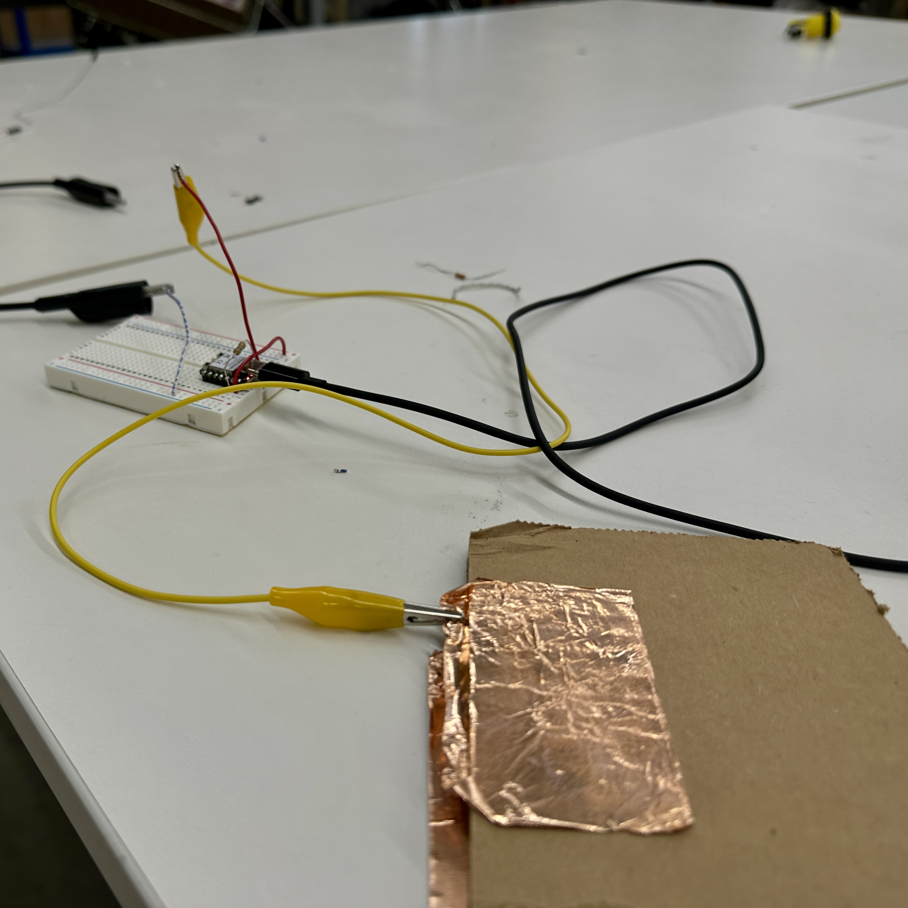
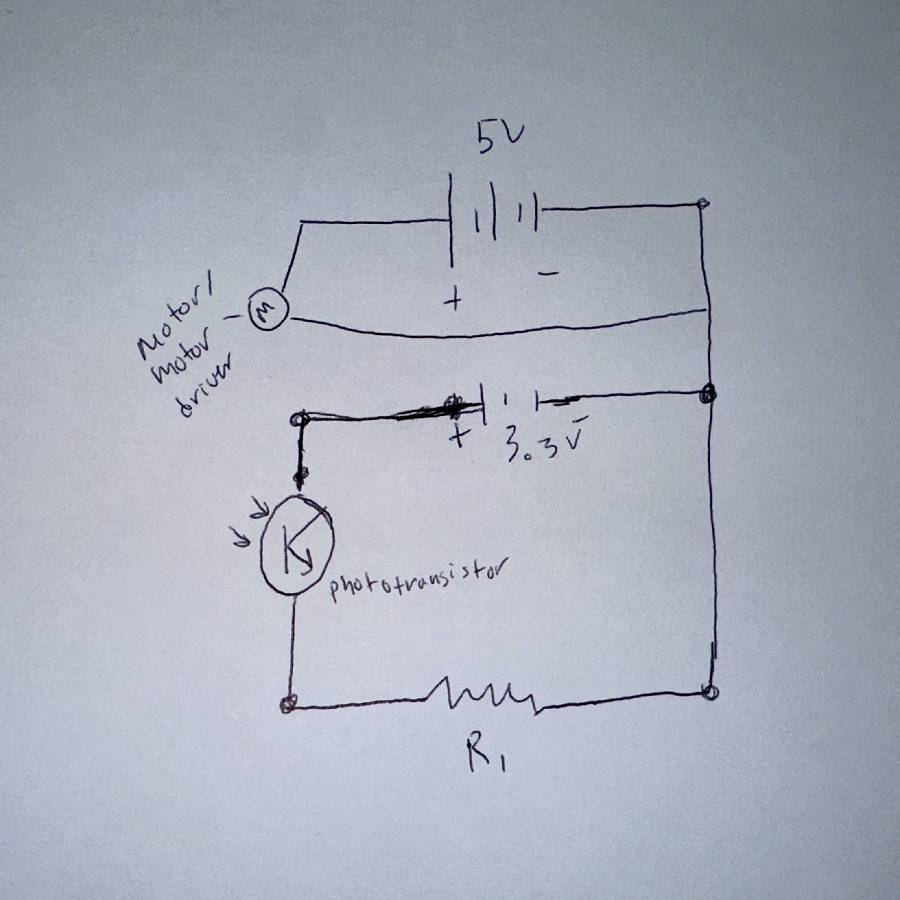

<div class="textcontainer">
<p class="margin"> </p>
<h3>Week 6: Electronic Inputs</h3>
<p class="margin"> </p>
<h4>Assignment 1: Capactive Sensor<h4>
<p class="margin"> </p>
<p> I initially missed the class on capacitive sensors, so doing the capacitive sensor assignment late was a bit of a tricky task without guidance. Eventually, I figured out that
the copper foil tape would be key, and figured that putting a piece of cardboard between the two pieces would be malleable enough to measure some different
sensitivities. Here is how that circuit looked.</p>
<p class="margin"> </p>
<p></p>
<p class="margin"> </p>
<P>Unfortunately for me, I was never able to get to the end of this task because the circuit and code that I came up with would only return ones and twos on
the serial monitor despite attempts at debugging. Here is the code that I used.</P>
<p class="margin"> </p>
<pre>#include <Arduino.h>
#define SENSOR_PIN D3
const unsigned long SAMPLE_INTERVAL = 200;
unsigned long lastSampleTime = 0;
const unsigned long TIMEOUT_US = 50000;
unsigned long measureCapacitance() {
pinMode(SENSOR_PIN, OUTPUT);
digitalWrite(SENSOR_PIN, HIGH);
unsigned long tChargeStart = micros();
while (micros() - tChargeStart < 10) {
}
pinMode(SENSOR_PIN, INPUT);
unsigned long tStart = micros();
while (digitalRead(SENSOR_PIN) == HIGH) {
if (micros() - tStart > TIMEOUT_US) {
return TIMEOUT_US;
}
}
unsigned long elapsed = micros() - tStart;
return elapsed;
}
void setup() {
Serial.begin(115200);
pinMode(SENSOR_PIN, INPUT);
}
void loop() {
unsigned long now = millis();
if (now - lastSampleTime >= SAMPLE_INTERVAL) {
lastSampleTime = now;
unsigned long capTime = measureCapacitance();
Serial.print("Capacitance time (us): ");
Serial.println(capTime);
}
</pre>
<p class="margin"> </p>
<h4>Assignment 2: Use + Calibrate Another Sensor</h4>
<p class="margin"> </p>
<p>
For this assignment, I once again returned to my kinetic sculpture, now wanting to control the speed the motor spins based on how much light it receives. This
idea yet again comes from the fact that the google dino game switches from light mode to dark with frequency, and as the player moves between these "levels", the
speed similarly changes to make the game easier or harder. Additionally, using the input of the photoresistor would give me good practice with my final project.
</p>
<video width="1280" height="640" controls>
<source src="DinoSpeed.mp4" type="video/mp4">
</video>
<p class="margin"> </p>
<p>
Here was my circuit and shematic for the week.
</p>
<p class="margin"> </p>
<img width="640" height="640" src="MotorDriver Circuit.jpeg">
<p class="margin"> </p>
<p></p>
<p class="margin"> </p>
<p> And here is my code</p>
<pre>
#include <Arduino.h>
#define MOTOR_IN1 D0
#define MOTOR_IN2 D1
#define SENSOR_PIN D2
const float MOTOR_SUPPLY_V = 5.0;
const float MIN_MOTOR_V = 1.5;
const float MAX_MOTOR_V = 4.0;
const int MIN_SPEED = (int)((MIN_MOTOR_V / MOTOR_SUPPLY_V) * 255.0 + 0.5);
const int MAX_SPEED = (int)((MAX_MOTOR_V / MOTOR_SUPPLY_V) * 255.0 + 0.5);
const unsigned long UPDATE_INTERVAL = 100;
unsigned long lastUpdate = 0;
void setup() {
Serial.begin(115200);
pinMode(MOTOR_IN1, OUTPUT);
pinMode(MOTOR_IN2, OUTPUT);
pinMode(SENSOR_PIN, INPUT);
digitalWrite(MOTOR_IN2, LOW);
analogWrite(MOTOR_IN1, MIN_SPEED);
Serial.print("MIN_SPEED (PWM) = ");
Serial.println(MIN_SPEED);
Serial.print("MAX_SPEED (PWM) = ");
Serial.println(MAX_SPEED);
}
void loop() {
unsigned long now = millis();
if (now - lastUpdate >= UPDATE_INTERVAL) {
lastUpdate = now;
int sensorValue = analogRead(SENSOR_PIN);
Serial.print("Light sensor: ");
Serial.println(sensorValue);
int speed = map(sensorValue,
0, 4095,
MIN_SPEED, MAX_SPEED);
if (speed < MIN_SPEED) speed = MIN_SPEED;
if (speed > MAX_SPEED) speed = MAX_SPEED;
setMotorSpeed(speed);
}
}
void setMotorSpeed(int speed) {
digitalWrite(MOTOR_IN2, LOW);
analogWrite(MOTOR_IN1, speed);
}
</pre>
<p class="margin"> </p>
<p> Finally, here is my prepared file for CNC week, which will help me to create a waterproof body for my final project.</p>
<p class="margin"> </p>
<a download href='./CNC Body.stl'>Download my CNC stl file! </a>
</div>